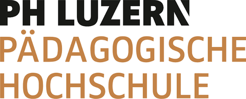
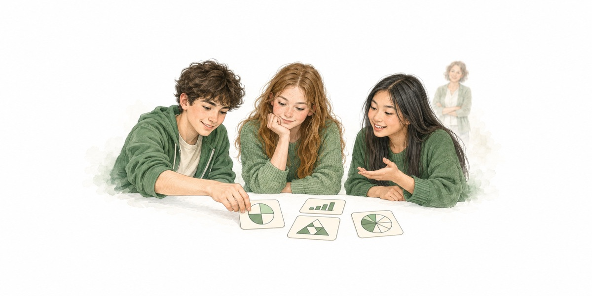
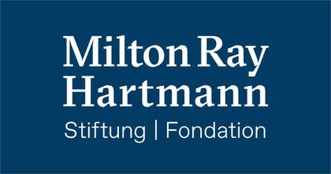
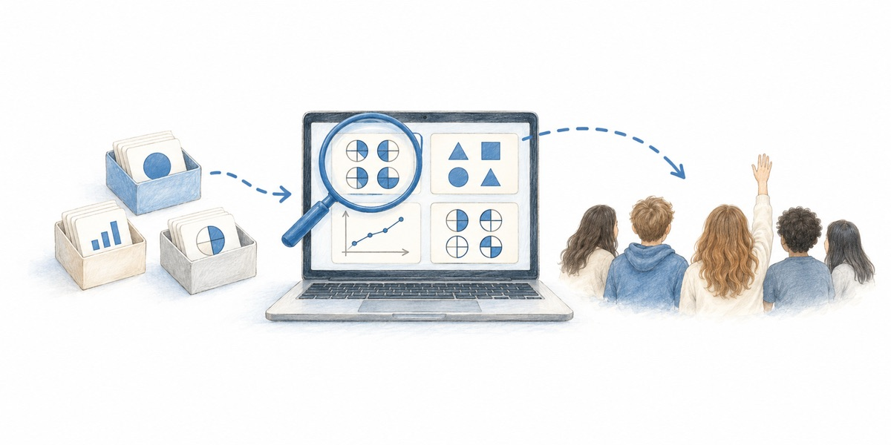
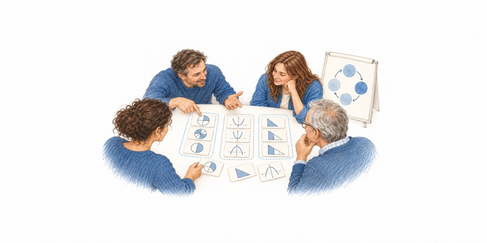
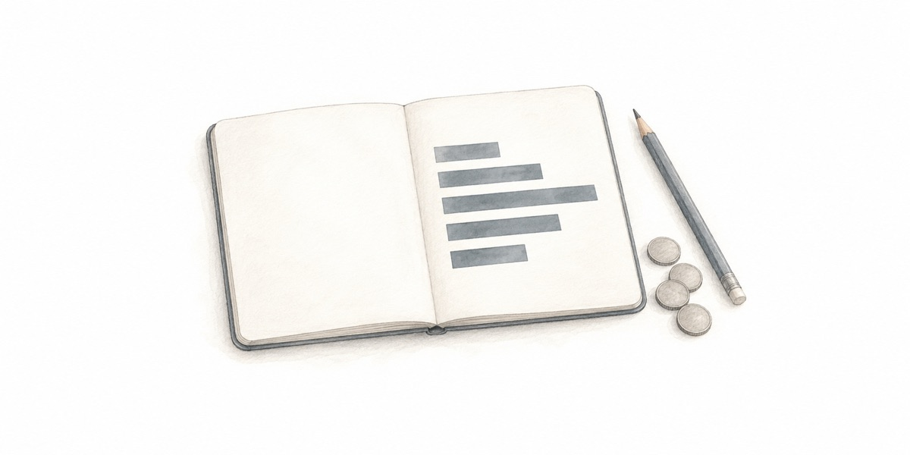

Karte anklicken zum Öffnen. Gelesene Karten drehen sich um und zeigen ihren Kernsatz.
Kärtchenaktivitäten, die selbstregulierte Phasen mit dem Klassenunterricht verbinden

Die Herausforderung
Schulen bauen selbstregulierte Phasen aus.
Damit wächst die Frage:
Was wird in dieser Zeit gelernt, und wie findet es in den Klassenunterricht zurück?
Die Gefahr
Was allein gelingen soll, wird oft nur abgearbeitet.
Gewählt wird, was die Lernenden sicher allein schaffen.
Rechne aus.
Jede Aufgabe für sich. Am Ende stehen Ergebnisse, über die niemand spricht.
Welche ergeben mehr als 1? Ohne auszurechnen. Begründet.
Dieselben Rechnungen. Jetzt muss die Gruppe vergleichen, schätzen und sich einigen.
Aufgaben, an denen man hängen bleibt, werden gemieden. Im Lehrplan 21 verschiebt sich das Gewicht zum Operieren und Benennen. Eine Tendenz, keine feste Zuordnung: Auch Rechenaufgaben können zum Denken bringen.
Gruppenarbeit wirkt riskant, also wird einzeln gearbeitet. Wo nicht diskutiert wird, bleibt auch das Begründen aus.
Die Aufgaben stehen für sich. Was in der Phase entsteht, kommt nicht in den Klassenunterricht zurück.
Unsere Antwort
Kärtchenaktivitäten sind allein bearbeitbar, bringen zum Denken und haben einen Rückweg.
Gruppen ordnen Karten nach einem Kriterium und begründen es, wie Lea und Jonas.
Was es dafür braucht
Aktivitätendie es für den eigenen Unterricht gibt: Kartensätze, abgestimmt auf Lehrplan und Lehrmittel
Zugangeine Plattform, die sie leicht zugänglich macht und das, was Gruppen erarbeiten, zurück in den Unterricht holt
Fortbildungdie zeigt, wie man damit unterrichtet
Grundlage ist das Pilotprojekt SORT der PH Luzern (2026/27): acht Kartensätze, erprobt in fünf Klassen.
Eine Gruppe sortiert frei und muss zuerst entscheiden, wonach. Beispiel «Bruch · Dezimalzahl · Bild», das Gespräch ist zur Veranschaulichung erfunden.
Die Herausforderung
Schulen bauen selbstregulierte Phasen aus: Lernateliers, Wochenpläne, offene Arbeitszeit. Damit wächst die Frage, was in dieser Zeit gelernt wird und wie es in den Klassenunterricht zurückfindet.
Aufgaben, die sich selbständig bearbeiten lassen und trotzdem anspruchsvolles Denken auslösen. Und die etwas hervorbringen, an dem die Klasse gemeinsam weiterarbeiten kann. Beides zusammen ist selten.
↓ Unsere Antwort
Sie leisten beides. Gruppen ordnen Karten mit Termen, Figuren oder Aussagen, einigen sich auf ein Kriterium und begründen es. Was dabei entsteht, wird zum Ausgangspunkt für das Klassengespräch.
Grundlage ist das Pilotprojekt SORT der PH Luzern (2026/27): acht Kartensätze, erprobt in fünf Klassen, gefördert von der Milton Ray Hartmann Stiftung.
CHF 578’200 · drei Schuljahre ab 2027/28
Karte anklicken zum Öffnen. Gelesene Karten drehen sich um und zeigen ihren Kernsatz.
Kärtchenaktivitäten unterscheiden sich in ihrer Ordnungslogik. Zwei Beispiele im Vergleich, danach weitere. Alle mit Brüchen wie bei Lea und Jonas; jedes Thema lässt sich so aufbereiten.
Sie verbinden, was in selbstregulierten Phasen selten zusammenkommt: selbständiges Arbeiten und anspruchsvolles mathematisches Denken.
Ordnen steckt in der Mathematik selbst.
Drei Schreibweisen, eine Zahl. Wer sie zusammenlegt, hat etwas über Brüche verstanden. Viele Aufgaben fragen nur nach dem Ergebnis, nicht nach dieser Ordnung.
Jede Karte muss irgendwo hin.
Sie sehen ähnlich aus, gehören aber nicht zusammen. Die Gruppe muss prüfen, nicht raten.
Die Ordnung liegt offen auf dem Tisch.
Jonas: Fünftel sind doch klein. Lea: Aber drei davon sind mehr als die Hälfte. Wer anderer Meinung ist, muss begründen.
Den Einstieg schafft jede und jeder.
½ zu 0,5 legen gelingt allen. Ob 0,05 auch dazugehört, muss die Gruppe begründen. Wer schneller ist, holt weitere Karten.
Ein Kriterium wählen, prüfen, notfalls umwerfen.
Erst nach Nennern sortiert: ⅖ und ⅘ liegen zusammen. Dann gemerkt, dass sie verschieden gross sind, und nach Wert neu geordnet.

Entscheidend ist der Schritt zurück ins Plenum.
Was die Gruppen erarbeiten, bleibt nicht in der selbständigen Phase. Es wird im Klassengespräch aufgegriffen, damit selbständige Arbeit und Unterricht nicht nebeneinanderher laufen.
Kärtchenaktivitäten gibt es auch auf Papier. Digital können sie mehr.
Der Weg bleibt erhalten, nicht nur das Ergebnis.
So hat Gruppe B die Karte «Zähler und Nenner plus dieselbe Zahl» gelegt. Die Lehrperson sieht diesen Weg und setzt im Gespräch dort an.
Ein Link statt einer Kiste voller Kärtchen.
Die Kartensätze lassen sich an die eigene Klasse anpassen und als Open Educational Resource weitergeben.
Die Kontrolle sagt, ob es passt, nicht warum.
Die Gruppe lässt ihre Ordnung prüfen, wenn sie will. Warum 2,5 nicht passt, findet sie selbst heraus. Wer weiter ist, holt weitere Karten.
Erst verändern, dann einordnen.
Auf einer dynamischen Karte erweitert die Gruppe ⅔ selbst. Erst beim Verändern zeigt sich, dass der Wert gleich bleibt. Rechts daneben steht ein Beispiel zum Ausprobieren.
Addiert man zu jeder Seite gleich viel, entsteht eine ähnliche Figur.
Immer, manchmal oder nie wahr?
Im Schuljahr 2026/27 entwickelt und erprobt das Pilotprojekt SORT der PH Luzern Kärtchenaktivitäten für die Klassen 7 und 9.
Vor, während und nach der Sortierphase.
Die Handreichung zeigt, wie Sortierphasen eingeführt werden, worauf während der Gruppenarbeit zu achten ist und wie die Ergebnisse ins Klassengespräch zurückkommen.
Ein Assistent, der die Gestaltungsprinzipien kennt.
Im Pilot schauen wir, wie KI die Entwicklung von Kartensätzen unterstützen kann. Der Assistent führt dabei durch die Gestaltungsprinzipien.

gefördert von der Milton Ray Hartmann StiftungVom Pilot aus Acht Kartensätze für einzelne Themen der Klassen 7 und 9, erprobt in fünf Klassen.
Mit SORT II: Kartensätze für alle drei Klassenstufen der Sekundarstufe I, breiter erprobt und frei verfügbar.
Die bestehenden Kartensätze kommen in rund zwölf Klassen im Jahr an Volksschulen zum Einsatz und werden danach überarbeitet.
Für Klasse 8 und weitere Themen, bis ein Schuljahr abgedeckt ist.
Karten, auf denen Lernende etwas verändern, etwa eine Figur verziehen. So werden Zusammenhänge sortierbar, die erst beim Verändern sichtbar werden.
Schon der Pilot orientiert sich an Lehrplan und Lehrmitteln. SORT II gleicht die Kartensätze systematisch mit Lehrplan 21, Mathbuch und dem Zürcher Lehrmittel ab.
Vom Pilot aus Die Kartensätze werden als Open Educational Resource frei zugänglich. Wie die Gruppen gearbeitet haben, sehen bisher nur die Lehrpersonen der Erprobung.

Wer Kärtchenaktivitäten nur austeilt, bekommt sortierte Karten zurück, aber noch keinen Unterricht. Lehrpersonen lernen den Einsatz, indem sie es tun und darüber sprechen.
Welche Sortierung passt in welche Phase des Unterrichts, und wozu soll sie dienen?
Die Sortierung in der eigenen Klasse durchführen und die Gruppen dabei beobachten.
Das Erarbeitete ins Klassengespräch zurückholen, ausgehend von den Stellen, die sich lohnen.
Die eigene Durchführung mit anderen besprechen und daraus die nächste planen.

Die Lehrperson wird nicht ersetzt.
Sie wird an anderer Stelle gebraucht: bei der Wahl, welche Sortierung in welche Phase passt, und beim Aufgreifen dessen, was die Gruppen erarbeitet haben.
Drei Dozierende der Mathematik-Lehrpersonenbildung an der PH Luzern tragen das Vorhaben gemeinsam.
Bringt das Format mit.
Dozentin für Mathematikdidaktik an der PH Luzern. Setzt Kärtchenaktivitäten seit Jahren in selbstreguliert angelegter Lehre ein und hat sie im Pilot systematisiert.
Bringt die Lehrmittel mit.
Dozent für Mathematik Sek I an der PH Luzern. Leitet «Das neue Mathbuch» und die Mathbuch-Applets, forscht zu explorierendem Arbeiten und Selbstregulation.
Bringt die Schulpraxis mit.
Sekundarlehrerin und Dozentin für Mathematik Sek I. Kennt als Fachberaterin die Schulen, ihre Masterarbeit galt der Ausbildung von Praxislehrpersonen.
Dazu wissenschaftliche Mitarbeit für die Begleitforschung · studentische Hilfskräfte · eine technische und eine grafische Position für die Plattform
Drei Schuljahre, 2027 bis 2030. Jedes Jahr wird erprobt, ausgewertet und überarbeitet.
über drei Schuljahre, rund 193’000 pro Jahr.
Der Balken zeigt die direkten Kosten von CHF 481’800; dazu kommt der Overhead.

Ein Klick auf einen Posten zeigt, wie er zustande kommt.